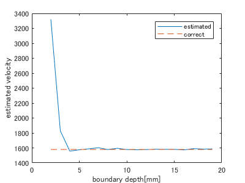
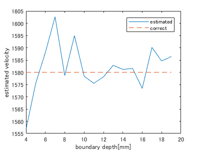
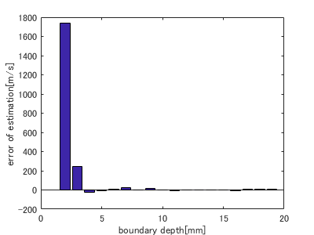
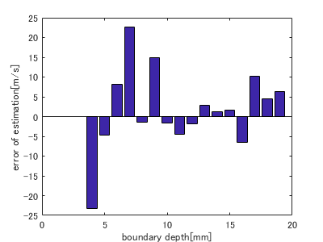

Contents
load("H:\result\2018_12_06_IMCL_direct_estimation\2layer\2018_12_07_multi_layer_variable.mat")
境界深さと音速推定精度の関係
figure;
plot(focal_depth*1e3,estimated_velocity);
hold on
plot(focal_depth*1e3,correct_velocity,'--');
hold off
xlabel('boundary depth[mm]');
ylabel('estimated velocity');
legend('estimated','correct');
savefilename = sprintf('/estimation_velocity');
savefig([dst_path,savefilename,'.fig']);
exportfig([dst_path,savefilename],'png',[400,300]);
figure;
plot(focal_depth(3:end)*1e3,estimated_velocity(3:end));
hold on
plot(focal_depth(3:end)*1e3,correct_velocity(3:end),'--');
hold off
xlabel('boundary depth[mm]');
ylabel('estimated velocity');
legend('estimated','correct')
savefilename = sprintf('/estimation_velocity_detail');
savefig([dst_path,savefilename,'.fig']);
exportfig([dst_path,savefilename],'png',[400,300]);
figure;
bar(focal_depth*1e3,estimated_velocity - correct_velocity);
xlabel('boundary depth[mm]');
ylabel('error of estimation[m/s] ');
savefilename = sprintf('/error_of_estimation');
savefig([dst_path,savefilename,'.fig']);
exportfig([dst_path,savefilename],'png',[400,300]);
figure;
bar(focal_depth(3:end)*1e3,estimated_velocity(3:end) - correct_velocity(3:end));
xlabel('boundary depth[mm]');
ylabel('error of estimation[m/s] ');
savefilename = sprintf('/error_of_estimation_detail');
savefig([dst_path,savefilename,'.fig']);
exportfig([dst_path,savefilename],'png',[400,300]);
   